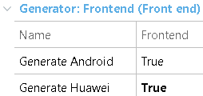

This article explains how to generate for the Huawei Platform (HMS for short). That is, how to generate for Huawei devices that do not support Google Play Services. How to enable generation for HMSApplications generated for HMS are Android applications, so the first step to enable HMS generation is to enable the Generate Android property. Next, you need to enable the Generate Huawei property. When you set this, GeneXus is going to generate two editions of the Android application, one classic Android application under the mobile\Android folder and an additional one under the mobile\Huawei folder.  How to test an application generated for HuaweiWhen the Generate Huawei property is set to True, you can select Huawei as the main prototyping platform by setting Main Platform property = Huawei. In this way, you can switch between Android or Huawei prototypes. How to enable different services for a Huawei applicationFirst, you need to register at Huawei Developers to get a HuaweiID. Once validated, you can access all the services provided for developing, testing, distributing, and monetizing your app. Depending on your organization's size, you can consider creating a Team account. Then, register and create your app with AppGallery Connect, enable the desired services, and follow the configuration steps. In general, the selected APIs can be checked in the My projects > Project settings > Manage APIs section. Finally, there is a new set of properties in each main object to give information to the generator about which services are going to be used in the generated Huawei application.
Thoroughly test your application and when ready go back to AppGallery Connect to upload the APK and release your application on the AppGallery. (1) - Available since GeneXus 17 upgrade 2 ReferencesLiga BBVA MX App Oficial uses this feature and is already available at Huawei's AppGallery. |
| Backlinks |
| GeneXus 17 upgrade 2 |